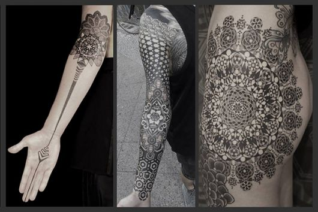
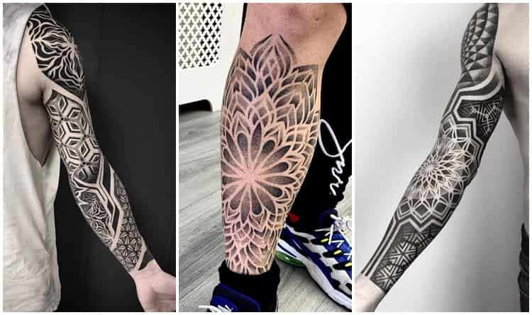
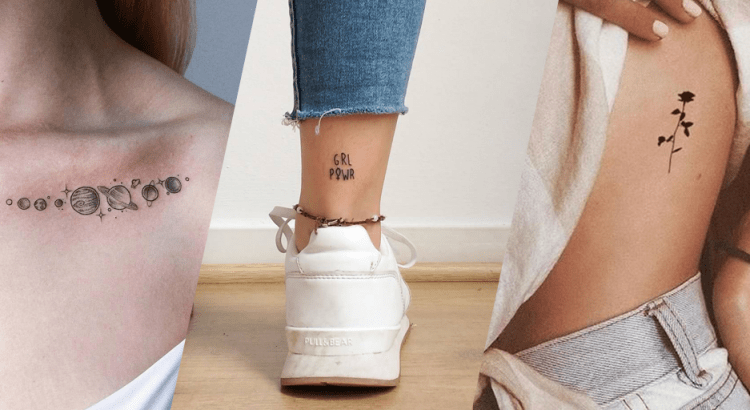
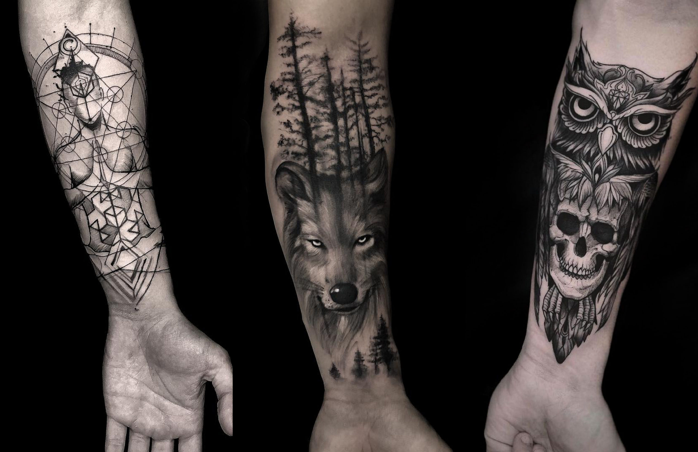
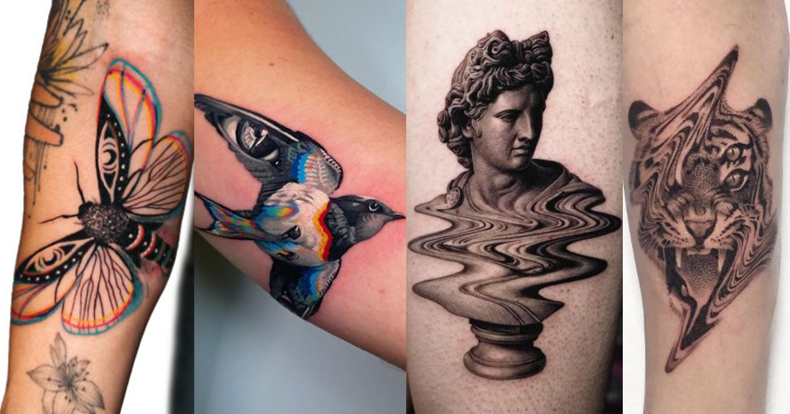
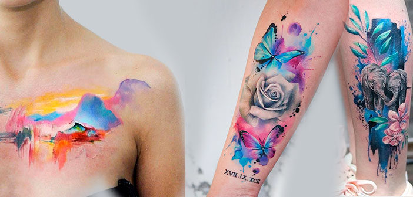
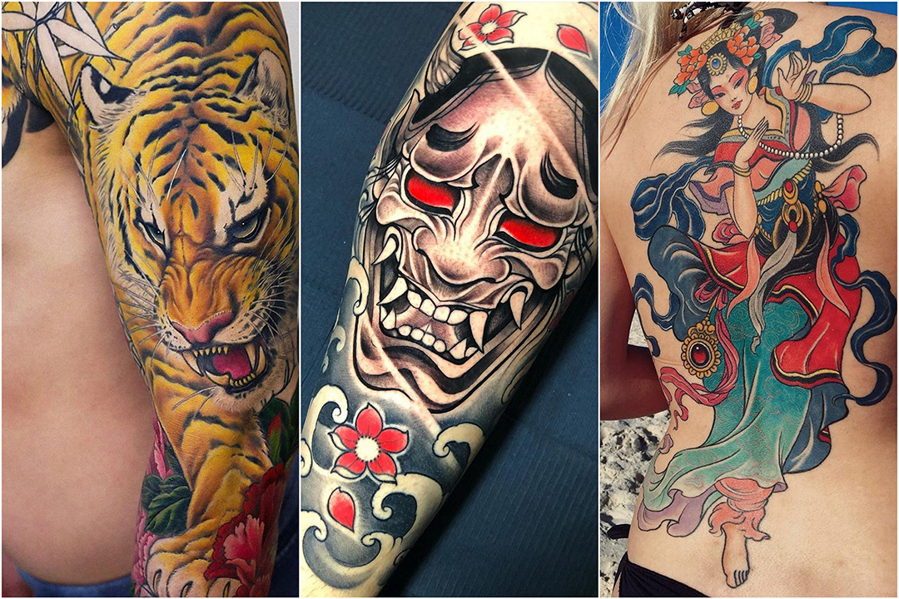
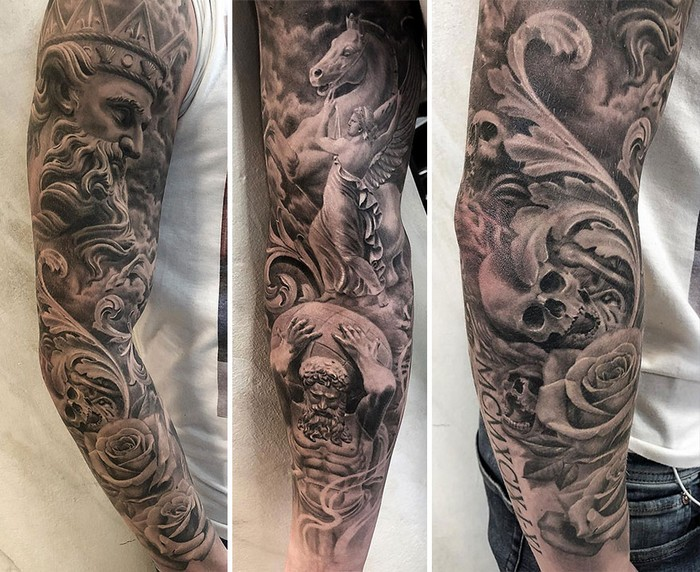

Biografia


Meu nome é Diego Marques Kowalski da Silva, comecei no ramo de tatuagem aos 17 anos, hoje em dia tenho 22 anos, sou de Salvador Bahia e moro no pelourinho mostrando a minha arte. Com muito esforço consegui construir meu estúdio de tatuagem, agora tenho meu Site e atráves dele vocês poderão ver meu trabalho.


Estilos
- 
PONTILHISMO
Criada na França no século 19, a técnica é conhecida originalmente como dotwork lá no exterior. Apesar de parecer simples, não é nada fácil manter a precisão nos pequenos pontos que formam o desenho! O cuidado com os detalhes é um dos pontos fortes nas tatuagens de pontilhismo.

OLD SCHOOL
O estilo old school nada mais é do que um culto à cultura vintage, trazendo desenhos de pin-ups, sereias e âncoras. Os desenhos trazem muitas cores vivas, traços retos e bem definidos - além de poucas firulas. Os amantes do retrô com certeza vão se apaixonar!
- 
GEOMÉTRICO
A técnica do desenho geométrico pode ir de uma simples arte até algo mais complexo e preciso. Mas, independente do nível de dificuldade, todas têm um ar sofisticado com suas retas e círculos em conjunto. Tatuagens geométricas exalam delicadeza e são sinônimo de precisão. Uma ótima sugestão pra quem tem um lado mais racional.
- 
MINIMALISTA
Para a tatuagem minimalista, menos é sempre mais. A técnica consiste em passar uma ideia sem que seja necessário que todos os traços estejam desenhados, meio que para o seu cérebro e criatividade preencherem o resto. Este estilo é perfeito para quem quer uma tattoo simples, mas muito bem desenhada!
- 
BLACKWORK
Na técnica do blackwork a tinta preta é a protagonista principal, e o desenho é contado a partir da presença ou da ausência do pigmento. Com preenchimento sólido e traços bem-definidos, o resultado é sempre impressionante e inusitado.

SINGLE LINE
O estilo single line está cada vez mais em destaque no mundo das tatuagens. Feitas com apenas uma linha, a técnica requer muita criatividade e força na mão pra deixar o desenho com a impressão que foi feito de uma vez só. Com um toque bem minimalista e conceitual, muitos apostam no estilo para sair da "mesmice" ou até mesmo expressar de um jeito simples algo que querem marcar no corpo.
- 
GLITCH
Moderninhas e com uma técnica invejável, as glitch tattoos propõem uma brincadeira com a ilusão de ótica. Os desenhos contam com distorções estratégicas, para parecer que a tatuagem travou, ou deu um bug. Por conta dessa característica, esse estilo de tatuagem conversa muito com a tecnologia.

TINTA BRANCA
Simples e discretas, as tatuagens feitas com tinta branca são tudo, menos complexas! Com um quê de misteriosas e perfeitas para quem procura um desenho minimalista, não é todo mundo que troca as cores tradicionais da tatuagem por algo menos chamativo. Gostou? A técnica foi tendência em 2015 e promete ficar.

TINTA VERMELHA
Em 2016, a maior tendência no mundo da tatuagem foi a tinta vermelha. A moda pegou entre as famosas, como Kylie Jenner, Ellie Goulding, Cara Delevingne e Rita Ora, por exemplo. E o resultado é realmente impressionante!
PRETO E BRANCO
Um clássico que nunca sairá de moda, a tatuagem P&B é das mais tradicionais e nunca perde seu charme e importância. Com um mundo de possibilidades à vista, os grandes destaques do estilo ficam por conta do sombreado e da precisão do traço.

SEM CONTORNO
As tatuagens sem contorno são indicadas para quem quer usar e abusar das cores sólidas, com desenhos tão vívidos que o clássico contorno preto chega a não ser nem necessário.
- 
AQUARELA
As tatuagens sem contorno são indicadas para quem quer usar e abusar das cores sólidas, com desenhos tão vívidos que o clássico contorno preto chega a não ser nem necessário.
- 
ORIENTAL
Usando a pele como um quadro pronto para a arte, o estilo oriental segue o conceito de tratar o corpo como uma obra. Os desenhos, na maioria das vezes, são grandes e ocupam todo o local escolhido. Samurais, dragões e carpas são apenas alguns dos elementos mais usados nas tatuagens orientais.
- 
REALISTA
Totalmente racionais, as tatuagens realistas prezam pelos detalhes e por muita - MUITA - fidelidade em relação à realidade. Talento é o que não pode faltar para os profissionais que trabalham com o estilo realista. As sessões costumam ser demoradas e sofridas, mas dá pra ver que vale muito a pena, não é?